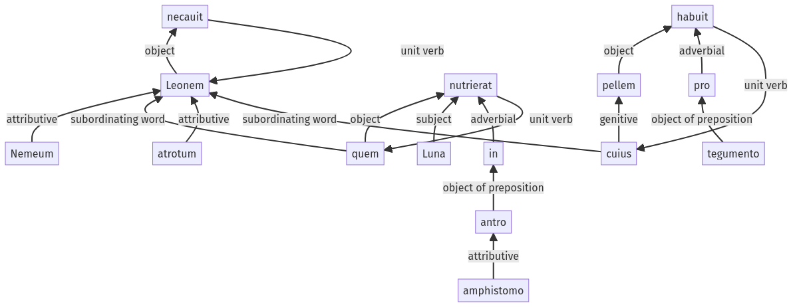

Hyginus, Fabulae, 30pr.2.1-30pr.2.15a
30pr.1.1-30pr.1.15a | 30pr.3.1-30pr.3.11a
Sentence 414
30pr.2.1-30pr.2.15a
Leonem Nemeum, quem Luna nutrierat in antro amphistomo atrotum, necauit, cuius pellem pro tegumento habuit.
1 Leonem Nemeum
2 quem Luna nutrierat in antro amphistomo
1 atrotum necauit
2 cuius pellem pro tegumento habuit
Leonem Nemeum, quem Luna nutrierat in antro amphistomo atrotum, necauit, cuius pellem pro tegumento habuit.
Highlighting:
- connecting words
- unit verb
- subject
- object
Color code:
- independent clause (level 1, transitive verb)
- subordinate clause (level 2, transitive verb)
- subordinate clause (level 2, transitive verb)
